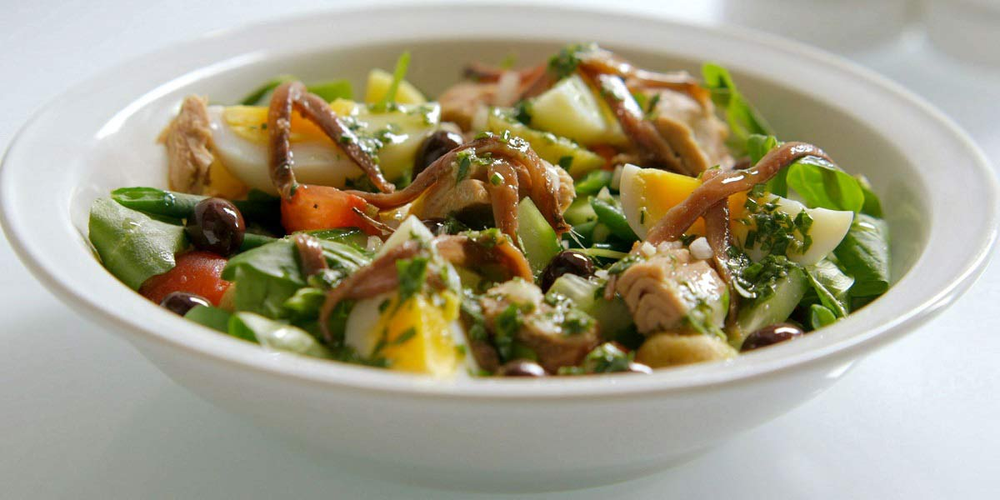

Tuna Nicoise Salad
Recipe Specification
Ingredients List
| Ingredients | Quantity |
|---|---|
| New Potatoes | 300g |
| French Beans | 100g |
| Medium Eggs | 3x1 |
| Baby Gem Lettuce | 2 heads |
| Cherry Tomatoes | 150g |
| Tuna Loin | 350g |
| Olive Oil | 75ml |
| Lemon | 1x1 |
| Balsamic Vinegar | 30ml |
| Black Pitted Olives | 60g |
| Marinated Anchovy fillets | 6 Fillets |
| Vegetable Oil | 30ml |
| Salt & Pepper | To Season |
Yield: 4-6 portions
Preparation
- Wash and cut new potatoes in half.
- Top and tail French beans before cutting in half.
- Tear, wash and spin dry baby gem leaves. Finely shred with sharp knife.
- Cut cherry tomatoes in half.
- Pick basil leaves.
- Juice lemon.
- Coat tuna loin with vegetable oil and season both sides with salt and pepper.
- Whisk olive oil with balsamic vinegar and lemon juice.
Cooking Instructions
- Place a griddle pan over a medium/high heat. Once hot, Sear tuna for 2 minutes per side and leave to cool before slicing to a 5 mm thickness. Set aside for later.
- Place a sauce pan of water and new potatoes over a high heat and bring to the boil before reducing to the simmer for 10-12 minutes. Remove from water and allow to cool to room temperature.
- Place a sauce pan of water over a high heat and bring to the boil before reducing to the simmer. Add eggs and cook for 10 minutes for hard boiled. Remove from the water and cool down in ice water. Peel eggs and cut into quarters length ways.
- Place a sauce pan of water over a high heat and bring to the boil. Add French beans and cook for 3-4 minutes. Refresh in cold water and set aside.
- Mix shredded baby gem with basil, French beans, new potatoes, cherry tomatoes, boiled egg, anchovies and olives before dressing with balsamic and lemon dressing. Lay sliced tuna steak over salad.

Serving Suggestions
Serve on it’s own.
Storing instructions
Store in an air-tight container and in the fridge. Consume within 4 days of making.